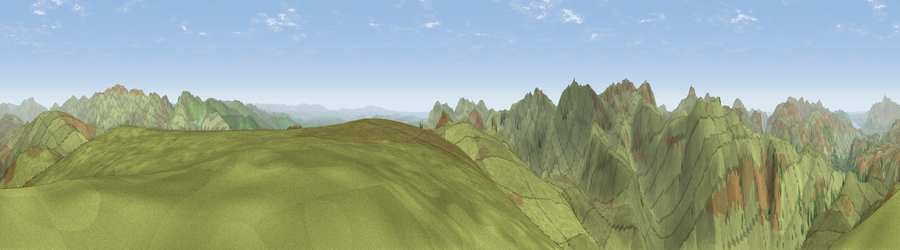

High Raise
#2165 in England · top 18% of its area beats it · near BorrowdaleThe view, rendered

A 360° render of this exact spot computed from the terrain model, tree cover and land cover — summer colours, afternoon light, calibrated against photographs of famous viewpoints. Real trees, hedges and buildings will differ in detail.
The panorama
Grey silhouette: terrain skyline in each direction (720 bearings, Earth curvature and refraction included). Dashed green: skyline with trees (+15 m) and buildings (+8 m) as obstacles. Blue strip: how far the ground is visible on each bearing.
Where the view opens
Wedge length = distance to the farthest visible ground on that bearing (vegetation-aware). Rings at 10, 25 and 50 km.
What fills the view
97% grassland · 3% woodland
Angular shares of the visible panorama (visual magnitude), not map area. Landscape diversity 0.07 (0–1 Shannon).
Key numbers
More beautiful places nearby
The staircase of upgrades: each row has a higher view potential than everything closer. Driving times are estimates from straight-line distance, calibrated against real road routing — check an actual route before setting out.
| Place | Direction | Drive | Score |
|---|---|---|---|
| Glaramara | WNW · 4 km | ~8 min | 79.8 |
| Bowfell North Top | SW · 4 km | ~10 min | 81.5 |
| Viewpoint c10128_6489 | SW · 5 km | ~11 min | 82.7 |
| Broad Crag | WSW · 6 km | ~14 min | 83.1 |
| Scafell Pike | WSW · 7 km | ~14 min | 83.9 |
| Viewpoint near Legburthwaite | NE · 8 km | ~16 min | 84.5 |
| Pillar | WNW · 11 km | ~21 min | 86.8 |
| Illgill Head | WSW · 12 km | ~23 min | 88.4 |
54.47596, -3.11146 · source: osm peak · position refined by local search. Computed location — check access rights before visiting.